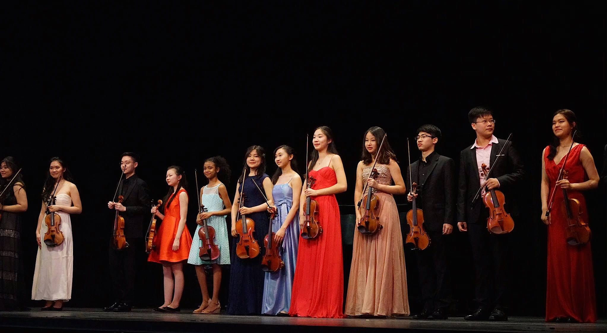

AMADEUS MUSIC SCHOOL
HOME
PROGRAMS
CARNEGIE HALL ROYAL CONSERVATORY
MEDIA
GALLERY
ACHIEVEMENTS
LOCATIONS
CAREERS
☰

Amadeus Music School Rising Stars Concert
June 2016
During the summer of 2016, Amadeus Music School held a Rising Stars Concert at the historic Flushing Town Hall. The presented violinists, all Juilliard Pre-College students, performed various classical pieces, well displaying their musicality and talent.
Faith Pak - Principle Violist of the National Youth Orchestra USA
August 2015
Congratulations to Faith Pak who has been selected as the Principle Violist of the National Youth Orchestra USA for 2015. This summer, NYO embarks on a historic China tour. Each year, Carnegie Hall brings together 120 of the brightest young musicians from across the country to perform. Faith studied at Amadeus Music School for 6 years before getting accepted to Juilliard Pre-college. She will attend Harvard University this fall.
Ashley Park 2nd Prize Winner in the Andrea Postacchini International Violin Competition 2016
May 2016
Amadeus student Ashley Park was declared the second Prize Winner of the Andrea Postacchini International Violin Competition this year. This prstigious competition is organized annualy to carry on the legacy of renowned Italian violinist Andrea Postacchini.